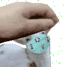

Non essendomi mai cimentata nel fare siti web e nel usare JS ho voluto provare a fare qualcosa di diverso.
L'idea per il qr mi è venuta quando è stato fatto un commento a lezione, e diciamo che l'idea iniziale non era quella di mettere un Rickroll, ma non mi sembrava appropriato.
Creare 3QR che portano sempre allo stesso link mi sembrava divertente quindi ho fatto un semplice random per i 3 elementi.
Credo di aver odiato ogni istante di CSS, non mi è piaciuto molto, per questo il sito non risulta bello o moderno.
Invece ricreare The Snake in ogni linguaggio di programmazione mi è sempre piaciuto, con poi l'aggiunta che se il serpente si schianta si possono aprire gli altri siti.
 Credo di aver odiato ogni istante di CSS, non mi è piaciuto molto, per questo il sito non risulta bello o moderno.
Invece ricreare The Snake in ogni linguaggio di programmazione mi è sempre piaciuto, con poi l'aggiunta che se il serpente si schianta si possono aprire gli altri siti.
Credo di aver odiato ogni istante di CSS, non mi è piaciuto molto, per questo il sito non risulta bello o moderno.
Invece ricreare The Snake in ogni linguaggio di programmazione mi è sempre piaciuto, con poi l'aggiunta che se il serpente si schianta si possono aprire gli altri siti.